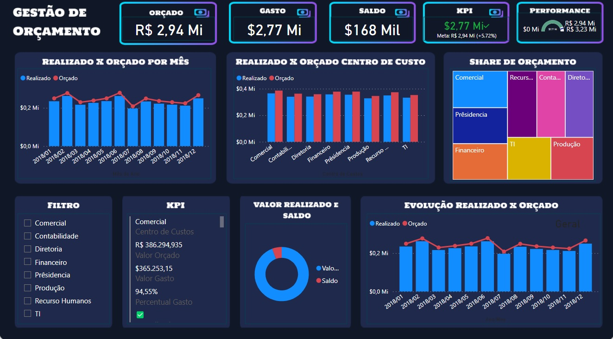
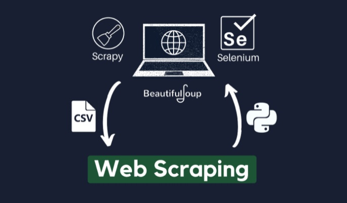

SQL:
Exploração de dados de Covid-19
Exploração de dados feita no SQL Server sobre os dados de vacinação e morte na pandemia de Covid-19.
Python
Webscraping com Scrapy e Beautiful Soup

Dois exemplos de scrapers que raspam dados de produtos em promoção do site Mercado Livre, utilizando Python, scrapy e BeautifulSoup.
Python:
Uma análise sobre a desistência de alunos de uma universidade
Essa análise foi feita utilizando as principais bibliotecas de análise e manipulação de dados: Pandas, Matplotlib, Plotly e Numpy.

Donec eget ex magna. Interdum et malesuada fames ac ante ipsum primis in faucibus. Pellentesque venenatis dolor imperdiet dolor mattis sagittis magna etiam.

Donec eget ex magna. Interdum et malesuada fames ac ante ipsum primis in faucibus. Pellentesque venenatis dolor imperdiet dolor mattis sagittis magna etiam.

Donec eget ex magna. Interdum et malesuada fames ac ante ipsum primis in faucibus. Pellentesque venenatis dolor imperdiet dolor mattis sagittis magna etiam.